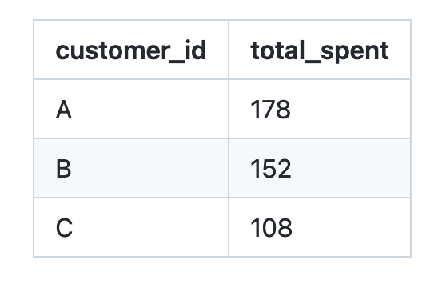
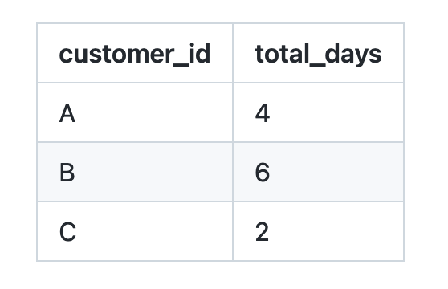
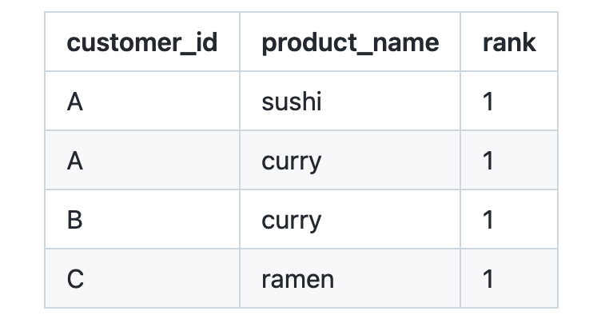
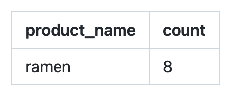
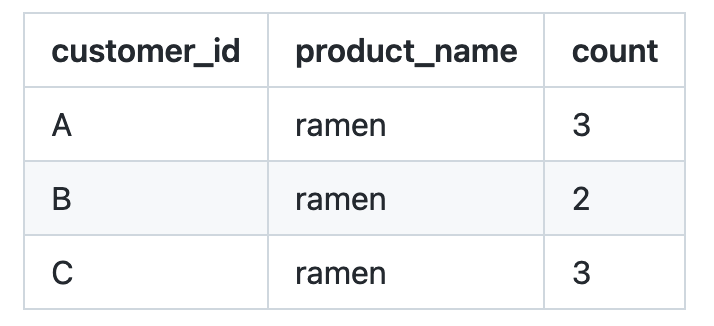

Danny Ma's SQL Challenge

SQL project where I worked through the 10 questions in this case study by Danny Ma.
Problem Statement:
Dannys Diner wants to use the data to answer a few simple questions about his customers, especially about their visiting patterns, how much money they’ve spent and also which menu items are their favourite.
More about this case study: Dannys Diner
See my full solution on github
Here is couple questions and my solutions:
1. What is the total amount each customer spent at the restaurant?
SELECT customer_id, SUM(product_id*price) AS total_spent
FROM dannys_diner.sales
JOIN dannys_diner.menu
USING (product_id)
GROUP BY customer_id
ORDER BY customer_id

2. How many days has each customer visited the restaurant?
SELECT customer_id, COUNT(DISTINCT order_date) as total_days
FROM dannys_diner.sales
GROUP BY customer_id

3. What was the first item from the menu purchased by each customer?
SELECT customer_id, product_name, rank
FROM (
SELECT customer_id, product_id,
DENSE_RANK () OVER (PARTITION BY customer_id ORDER BY order_date) AS rank
FROM dannys_diner.sales
GROUP BY customer_id, product_id, order_date
) AS rank_table
JOIN dannys_diner.menu
USING (product_id)
WHERE rank =1
ORDER BY customer_id

4. What is the most purchased item on the menu and how many times was it purchased by all customers?
SELECT product_name, COUNT (product_id)
FROM dannys_diner.sales
JOIN dannys_diner.menu
USING (product_id)
GROUP BY product_name
ORDER BY count DESC
LIMIT 1

5. Which item was the most popular for each customer?
WITH rank AS (
SELECT customer_id, product_name, COUNT(product_id),
DENSE_RANK () OVER (PARTITION BY customer_id ORDER BY product_id DESC) as rank
JOIN dannys_diner.sales
USING (product_id)
GROUP BY customer_id, product_id, product_name
)
SELECT customer_id, product_name, count
FROM rank
WHERE rank = 1
